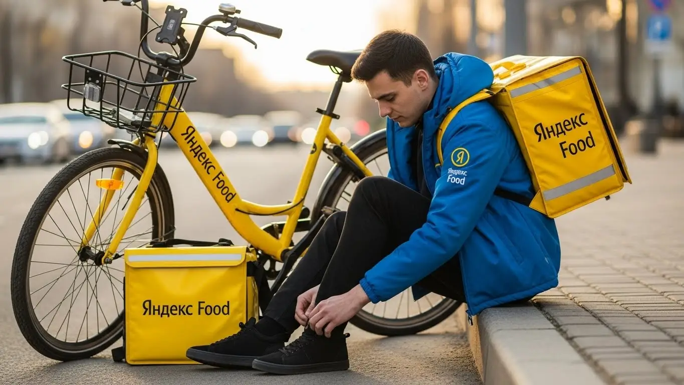

Доход курьера Яндекс Еды в Калининграде 2025-2026: разбор
- Работа курьером Яндекс Еды в Калининграде: для кого эта вакансия и что вы получите
- Сколько вы будете зарабатывать курьером в Калининграде: калькулятор дохода и разбор выплат
- Реальный заработок курьера в Калининграде: смены и месячный доход
- График работы и форматы занятости
- Требования к кандидату и документы
- Самозанятость, налоги и юридическая чистота
- Пошаговое оформление и первый выход на линию в Калининграде
- Пешком, на вело или на авто: что выгоднее в Калининграде
- Районы, маршруты и «топовые» зоны заказов в Калининграде
- Безопасность, страховка, штрафы и оплата простоя
- Плюсы и возможные минусы работы курьером в Калининграде
- Реальные истории и отзывы курьеров из Калининграда
- Ответы на главные вопросы о работе курьером Яндекс Еды в Калининграде
- Короткие ответы на главные вопросы
- Итоги и ваш следующий шаг
Все города
Здорово, будущий коллега! Тоже присматриваешься к желтой сумке и думаешь, что работа курьером Яндекс Еда в Калининграде — это легкие деньги на свободном графике? Я тоже так думал, пока в первый же месяц не поймал пару штрафов, не постоял в мертвой пробке на Московском проспекте и не понял, что брусчатка в центре «съедает» подвеску велосипеда быстрее, чем ты успеваешь заработать на её ремонт. Давай честно: это не прогулка по Рыбной деревне, а серьезная работа со своими калининградскими приколами.
Большинство рекламных статей поют о тысячах в день, но умалчивают о реальной «внутрянке». Они не расскажут, что твой чистый доход — это не цифра в приложении, а то, что останется после вычета налога и расходов на бензин или проезд. Не объяснят, почему в Центральном районе заказы сыпятся один за другим, а на Балтрайоне можно прождать час. Чтобы получить официальную информацию, посмотреть детальный калькулятор и сразу заполнить анкету, лучше всего изучить страницу про работу курьером Яндекс Еда в Калининграде. Новички в Калининграде наступают на одни и те же грабли: берут невыгодные заказы, не знают часы пик и в итоге разочаровываются, не понимая, почему заработок не сходится с ожиданиями.
Поэтому я и решил написать этот гид. Здесь мы по косточкам разберём, что выгоднее для Калининграда — работать пешком, на велосипеде или на авто. Посчитаем реальные цифры дохода с учётом наших цен и расстояний. Я покажу на карте «рыбные» районы и мёртвые зоны, расскажу, как калининградская погода — от морского тумана до ледяного дождя — влияет на заработок, и как не нарваться на штрафы. Никакой воды, только мясо и личный опыт.
Меня зовут Алексей. Я сам откатал не одну тысячу километров с желтым коробом по Калининграду, а сейчас руковожу небольшим таксопарком-партнёром и вижу всю эту кухню изнутри. Я знаю, где теряют деньги, а где их находят. Так что устраивайся поудобнее, сейчас я без рекламной шелухи разложу по полочкам всё, что нужно знать про работу курьером Яндекс Еды в нашем городе. Начнём с главного.
Чтобы тебе было проще сориентироваться, я подготовил небольшой гид по ключевым темам статьи.
Главное по полочкам: что нужно знать курьеру в Калининграде
В этой статье ты ТОЧНО узнаешь:
- Сколько реально можно заработать в Калининграде за смену и за месяц, если работать пешком, на вело или на авто?
- В каких районах Калининграда — от Сельмы до Балтрайона — больше всего заказов и как погода влияет на доход?
- Что выгоднее для Калининграда: медленный, но бесплатный пеший формат, быстрый велосипед или комфортный, но затратный автомобиль?
- За что на самом деле штрафуют и как высокий рейтинг помогает получать больше выгодных заказов?
- Почему работать как самозанятый выгоднее, чем через парк, и как платить налоги, чтобы всё было легально?
- Как правильно выбирать слоты и «фиолетовые зоны» в приложении, чтобы не сидеть без заказов и не кататься впустую?
А если тебе некогда читать всю статью — переходи сразу к заключению, где ты найдёшь короткие ответы на все эти вопросы и указания, в каких разделах искать подробности.
А для начала — вот наглядная инфографика с главными цифрами по работе в Калининграде.
Яндекс Еда в Калининграде: ключевые цифры
Работа курьером Яндекс Еды в Калининграде: для кого эта вакансия и что вы получите
Давай начистоту: работа курьером — это не для всех, но для многих она становится отличным решением. В Калининграде с его компактным центром, разбросанными спальными районами и переменчивой погодой эта сфера имеет свою специфику. Здесь можно как неплохо подработать, так и сделать доставку основным источником дохода. Главное — понимать, подходят ли тебе такие условия работы и что ты от них получишь в итоге.
Эта работа — конструктор. Ты сам решаешь, когда и сколько работать, какой транспорт использовать и в каком районе города развозить заказы. Никаких начальников над душой и душного офиса — только ты, приложение в телефоне и город. Если ценишь свободу, хочешь, чтобы твой доход зависел напрямую от твоих действий и ищешь свободный график, — это хороший вариант.
Кому подойдёт эта работа в Калининграде
По моему опыту, в доставку приходят совершенно разные люди, но есть несколько категорий, для которых эта вакансия курьера подходит идеально. Во-первых, это студенты, например, из БФУ им. Канта или КГТУ. Учёбу легко совмещать с доставкой: можно выходить на пару часов после пар или работать полные дни на выходных. Такая подработка позволяет получать деньги быстро, не дожидаясь конца месяца.
Во-вторых, это те, кто ищет дополнительный заработок к основной зарплате. Если ты работаешь по графику 2/2 или на пятидневке, вечера и выходные можно превратить в стабильный доход. В-третьих, сюда идут люди без опыта работы. Никто не будет требовать диплом или резюме на три страницы. Нужен только смартфон, умение ориентироваться в городе и желание работать. И конечно, это отличный вариант для водителей на своем авто, которые устали от такси, но хотят использовать машину для заработка.
Главные преимущества для жителей районов Ленинградского, Московского, Центрального
Одно из главных удобств в Калининграде — возможность работать рядом с домом. Тебе не нужно каждый день тратить час-полтора на дорогу до «офиса». Живёшь, скажем, в Ленинградском районе, в районе Сельмы или на Артиллерийской — просто выходишь из дома, включаешь приложение «Яндекс Про» и начинаешь выполнять заказы в своей же локации.
То же самое касается жителей Московского района — от Южного вокзала до Балтрайона — или Центрального, включая старые немецкие кварталы Амалиенау. Везде есть рестораны, магазины и, соответственно, заказы. Это экономит не только время, но и деньги на проезд. Ты лучше знаешь свой район, все короткие пути и дворы, что даёт тебе преимущество в скорости.
Краткое обещание по доходу и условиям
Теперь о главном — о деньгах. В Калининграде активный курьер может зарабатывать от 2500 до 4500 рублей за полную смену (8–10 часов). Если рассматривать это как подработку на 3–4 часа в день, то можно рассчитывать на 1000–1800 рублей. В месяц при полной занятости вполне реально выходить на зарплату в 60 000 – 90 000 рублей и даже больше, особенно если работать на автомобиле в пиковые часы.
Ключевые требования и условия просты. Ты работаешь как самозанятый, что даёт официальный доход. Деньги можно выводить на карту каждый день — одно из главных преимуществ это ежедневные выплаты. График абсолютно свободный, ты сам выбираешь слоты в приложении. И самое важное — начать можно без опыта. Пройдёшь короткое онлайн-обучение, получишь термокороб (термосумку) и можешь выходить на линию.
Например, у меня был парень, студент-третьекурсник из БФУ. Жил в общежитии недалеко от центра. Он выходил на 3-4 часа по вечерам в будни и на 6 часов в субботу, работал пешком в Центральном районе. За неделю у него стабильно выходило 7-9 тысяч рублей чистыми. Этих денег ему с лихвой хватало на личные расходы, и он не зависел от родителей. Он ценил именно то, что мог пропустить смену, если завал по учёбе, и наверстать в другой день.
В общем, работа курьером Яндекс Еда в Калининграде — это гибкий инструмент для заработка. Она идеально подходит студентам, тем, кто ищет подработку, и людям без опыта. Главные плюсы — свободный график, ежедневные выплаты и возможность работать в своём районе, не тратя время на дорогу. Мой совет новичкам: начните со своего района, чтобы освоиться, а уже потом, когда поймёте механику, можно будет выезжать в зоны с повышенным спросом.
Сколько вы будете зарабатывать курьером в Калининграде: калькулятор дохода и разбор выплат
Многих новичков пугает вопрос: «А сколько я реально заработаю?». В этой работе нет фиксированной зарплаты, и это одновременно плюс и минус. Твой доход — это сумма нескольких составляющих, и если понимать, как всё устроено, можно зарабатывать ощутимо больше среднего. Давай разберём по косточкам, из чего складываются выплаты.
Твой заработок — это не просто плата за доставку. Система намного умнее и справедливее. Она учитывает расстояние, сложность, спрос и даже время, которое ты можешь потратить впустую. Понимание этих механизмов — ключ к стабильному и высокому доходу.
Из чего складывается доход курьера
Твой итоговый чек за смену формируется из нескольких частей. Во-первых, это базовая оплата за каждый выполненный заказ. Во-вторых, доплата за расстояние — чем дальше везти, тем больше платят. Это логично.
Дальше идут более интересные вещи, которые помогают заработать больше. Повышающие коэффициенты — твой главный друг. Когда в каком-то районе заказов становится очень много (например, в пятницу вечером или в дождливую погоду), зоны на карте в приложении «Яндекс Про» окрашиваются в яркие цвета. Работа в такой зоне может умножить стоимость заказа в 1.5, 2, а то и в 3 раза.
Кроме того, есть персональные бонусы за выполнение определённого числа заказов. И не забывай про чаевые — они полностью твои. Важный момент: сервис платит за простой, если ты прибыл в ресторан, а заказ ещё не готов. А для курьеров на общественном транспорте может быть компенсация проезда на дальних маршрутах.
Как пользоваться калькулятором дохода
Чтобы прикинуть свой потенциальный заработок, на сайте есть специальный калькулятор. Пользоваться им просто. Сначала выбираешь свой город — Калининград. Затем указываешь тип доставки: пеший ты курьер, на велосипеде или на своём авто.
После этого выставляешь, сколько часов в день и сколько дней в неделю планируешь работать. На основе этих данных и средних показателей по городу калькулятор покажет примерный диапазон твоего дохода за день и за месяц. Понятно, что это не стопроцентная гарантия, а ориентир. Но он помогает снять главный вопрос и понять, на какие цифры можно рассчитывать при разной степени занятости.
Прикинь свой возможный доход в Калининграде
8 часов
5 дней
Это примерный расчёт на основе средней ставки по городу. Реальный заработок зависит от спроса, бонусов, чаевых и твоего рейтинга.
Эти примеры показывают, что доход сильно зависит от выбранного формата. Чтобы узнать больше про актуальные условия и требования, а также посмотреть подробный FAQ и сразу заполнить анкету, загляни на страницу про работу курьером Яндекс Еда в твоём городе.
Примеры расчёта для пешего, вело- и авто‑курьера в Калининграде
Давай на конкретных примерах, чтобы было понятнее.
- Пеший курьер. Студент работает в центре, в районе площади Победы и ТРЦ «Европа». Выходит на 4 часа в субботу. В этой зоне много кафе, спрос стабильный. В среднем он выполняет 2-3 заказа в час. За 4 часа он может сделать около 10 заказов. Средний чек за заказ с учётом небольшого расстояния — 130–150 рублей. Итог: 1300–1500 рублей за короткую смену.
- Велокурьер. Парень работает по 8 часов, курсируя между Ленинградским и Московским районами. На велосипеде он быстрее покрывает расстояния в 3–5 км. За час он успевает сделать 3-4 заказа. За 8-часовую смену это 24–32 заказа. Средняя стоимость заказа выше из-за расстояния — 160–180 рублей. Плюс могут быть бонусы. Его дневной заработок составит примерно 3800–5200 рублей.
- Автокурьер. Мужчина работает в вечерние часы пик и в плохую погоду, когда коэффициенты максимальные. Он берёт дальние заказы по всему городу и в пригород (например, в Гурьевск), доставляя не только еду, но и посылки по тарифам Яндекс Доставки. За 6-часовую смену он может выполнить 15–18 заказов, но средний чек каждого заказа с учётом расстояния и коэффициентов — 250–350 рублей. Его заработок за смену может достигать 4000–6000 рублей до вычета расходов на бензин.
Сравнение типов курьеров в Калининграде
| Параметр | Пеший курьер | Велокурьер | Автокурьер |
|---|---|---|---|
| Примерный доход в час (пик) | 350–500 ₽ | 450–650 ₽ | 600–900 ₽ (до вычета топлива) |
| Лучшие зоны в Калининграде | Центр, остров Канта, Верхнее озеро | Ленинградский, Московский районы | Весь город, пригороды (Гурьевск, Васильково) |
| Основные расходы | Проезд на общественном транспорте (иногда) | Обслуживание велосипеда | Бензин, амортизация авто |
Как-то раз в ноябре в Калининграде лил ледяной дождь. Я сам был на линии на машине. Весь город горел фиолетовым в приложении — это зоны максимального спроса. Заказы сыпались один за другим, в основном на дальние расстояния, потому что никто не хотел выходить из дома. За 4 часа я сделал 10 доставок, но почти каждая была с коэффициентом х2.5. В итоге за этот короткий вечер я заработал около 4000 рублей чистыми, за вычетом бензина. В обычный день на это ушло бы 8-9 часов.
Итак, твой заработок — это не случайность, а результат твоих действий и понимания системы. Он состоит из оплаты за заказ, расстояние, бонусов и коэффициентов. Используй калькулятор для ориентира, но помни, что реальные цифры зависят от тебя. Мой совет: не сиди на месте в ожидании заказа. Активно следи за картой спроса в «Яндекс Про» и перемещайся в «горящие» зоны — именно там находятся самые большие деньги.
Реальный заработок курьера в Калининграде: смены и месячный доход
Давай к главному — к деньгам. Все эти разговоры про свободный график и работу на себя ничего не стоят, если в кармане пусто. Сразу скажу: потолка в заработке нет, но и фиксированной зарплаты тоже. Сколько набегаешь — столько и получишь. В работе курьером в Калининграде твой доход напрямую зависит от трёх вещей: как ты доставляешь, когда и где работаешь. Новичок, который выходит на пару часов в день погулять по своему району, и опытный автокурьер, работающий в пиковые часы, будут иметь совершенно разный месячный доход.
Главное, что нужно понять: работа курьером — это не оклад, а скорее свой маленький бизнес. Ты сам решаешь, когда «открыть свою лавочку» и насколько активно привлекать «клиентов» в виде заказов. Условия работы прозрачны: в приложении «Яндекс Про» ты видишь стоимость каждого заказа ещё до его принятия. Никаких сюрпризов в конце месяца.
Диапазон дохода для подработки и полной занятости
Давай без рекламных обещаний, только реальные цифры по Калининграду, которые я вижу у своих ребят и по своему опыту. Это средние значения, у кого-то получается больше, у кого-то меньше.
Если ты ищешь подработку на 2–4 часа в день, например, после учёбы или основной работы, ориентируйся на такие цифры:
- Пеший или велокурьер: за короткую смену в 3–4 часа можно сделать 800–1500 рублей. В месяц это выливается в 15 000–25 000 рублей, если работать 4–5 дней в неделю. Идеально для студентов и тех, кому нужны деньги на конкретную цель.
- Курьер на автомобиле: на машине за то же время выходит больше за счёт скорости и дальности заказов — примерно 1200–2000 рублей. В месяц это уже 25 000–35 000 рублей дополнительного дохода. Но не забывай вычитать расходы на бензин.
При полной занятости, когда ты работаешь по 8–10 часов в день, цифры совсем другие. Это уже полноценная работа с соответствующим доходом:
- Пеший или велокурьер: стабильно можно зарабатывать 2500–4000 рублей в день. За полный рабочий месяц (20–22 смены) выходит 50 000–80 000 рублей.
- Автокурьер: здесь доход самый высокий. В хороший день можно привезти 4000–6000 рублей и больше. В месяц это даёт 80 000–120 000 рублей «грязными». После вычета топлива и налога для самозанятых остаётся очень приличная сумма для Калининграда.
Как район, время суток и погода влияют на доход
Запомни золотое правило курьера: твой главный друг — это высокий спрос. Когда заказов много, а курьеров на линии мало, включаются повышающие коэффициенты. Стоимость каждого заказа умножается на этот коэффициент, и твой заработок растёт. В Калининграде это особенно заметно.
Время суток — ключевой фактор. Самые «жирные» часы — это обед (с 12:00 до 15:00) и ужин (с 18:00 до 21:00). В это время все хотят есть, и заказы из ресторанов сыплются один за другим. Пятница вечер, суббота и воскресенье — это вообще сплошной пик, можно работать весь день и не сидеть без дела. А вот утром в будни или днём заказов по линии Яндекс Еды меньше, но есть доставка из магазинов и посылок через Яндекс Доставку.
Погода в Калининграде — это отдельная история. Наш знаменитый дождь и сильный ветер — это твой шанс заработать больше. Пока все сидят по домам, спрос на доставку взлетает до небес, а желающих мокнуть на улице курьеров становится меньше. В итоге коэффициенты могут быть х2 или даже х3. То же самое происходит в снегопад зимой или в сильную жару летом. Клиенты в плохую погоду и чаевые оставляют охотнее — ценят твой труд.
Районы тоже имеют значение. В Центральном и Ленинградском районах, где много офисов, кафе и ресторанов, заказы есть почти всегда. Московский район — огромный спальник, там пик спроса приходится на вечера и выходные. Выбирай зону с умом, исходя из времени суток.
Советы по увеличению заработка от опытных курьеров
Просто выйти на линию и ждать заказов — стратегия так себе. Чтобы зарабатывать больше, а уставать меньше, нужно подходить к делу с головой. Вот несколько проверенных советов.
Во-первых, планируй смены. Не бери один длинный слот на 12 часов с утра до ночи. Эффективнее разбить день на два пиковых слота: например, с 12:00 до 15:00 и с 18:00 до 22:00. В перерыве можешь отдохнуть или заняться своими делами. Так ты будешь работать в самое прибыльное время и не вымотаешься.
Во-вторых, следи за картой спроса в «Яндекс Про». Зоны, подсвеченные фиолетовым, — это места с самыми высокими коэффициентами. Не нужно сломя голову лететь через весь город за каждой такой зоной, но если она рядом — смещайся туда. Часто бывает выгодно постоять 10–15 минут у крупного ТЦ вроде «Европы» или «Балтия Молл» и дождаться дорогого заказа.
В-третьих, сочетай форматы. Если у тебя есть машина, используй её для дальних заказов между районами или в пригород. Но если прилетает заказ в самый центр, где вечные пробки и негде припарковаться, иногда быстрее и выгоднее оставить машину и пробежаться пару кварталов пешком. Гибкость — твой ключ к успеху. И не ленись общаться с клиентами и персоналом ресторанов вежливо — это напрямую влияет на чаевые и твой рейтинг.
Вот недавний пример из практики. Парень на стареньком «Гольфе» решил поработать в дождливую пятницу. Он не стал кататься по всему городу, а выбрал зону в Ленинградском районе, где много новостроек и ресторанов. За счёт высокого «мокрого» коэффициента и плотного потока заказов он за 4 часа (с 19:00 до 23:00) сделал почти 3500 рублей. В обычный день на это ушло бы 6–7 часов.
Сравнение дохода курьера в Калининграде
| Параметр | Пеший / Велокурьер | Автокурьер |
|---|---|---|
| Подработка (3-4 часа/день) | 800 – 1 500 ₽/смена | 1 200 – 2 000 ₽/смена |
| Полная занятость (8-10 часов/день) | 2 500 – 4 000 ₽/смена | 4 000 – 6 000 ₽/смена |
| Примерный доход в месяц (подработка) | 15 000 – 25 000 ₽ | 25 000 – 35 000 ₽ |
| Примерный доход в месяц (полная занятость) | 50 000 – 80 000 ₽ | 80 000 – 120 000 ₽ (до вычета расходов) |
В итоге, твой реальный заработок в Калининграде — это не случайность, а результат твоей стратегии. Деньги лежат в пиковых часах, плохой погоде и популярных районах. Новичкам советую начинать с вечерних смен в пятницу или в выходные в своём районе, чтобы сразу почувствовать ритм и увидеть хороший доход, это мотивирует.

График работы и форматы занятости
Одно из главных преимуществ этой работы — гибкость. Ты действительно сам себе начальник и решаешь, когда выходить на линию. Никто не будет стоять над душой и требовать отработать с 9 до 6. Это идеальный вариант для тех, кто хочет совмещать работу с учёбой, другим делом или просто не любит жёсткие рамки. Но важно понимать, что «свободный график» не равно «хаос». Чтобы хорошо зарабатывать, нужна самодисциплина и планирование.
Система предлагает два основных формата: свободные выходы, когда ты просто нажимаешь кнопку «На линию» в любое время, и плановые слоты, которые ты бронируешь заранее. У плановых слотов есть преимущество — часто на них действует гарантированная минимальная оплата в час. Даже если заказов будет мало, сервис доплатит до определённой суммы. Это твоя страховка от простоя.
Подработка после учёбы или основной работы
Совмещать доставку с другими делами проще простого. Большинство курьеров как раз и начинают с подработки, чтобы понять, подходит ли им это, и заработать дополнительные деньги. Вот пара реальных сценариев из жизни калининградских ребят.
Пример первый: студент БФУ им. Канта, живёт в общежитии в Центральном районе. У него есть велосипед. Он не хочет просить деньги у родителей, поэтому после пар, с 18 до 22 часов, выходит на линию. В будни катается 3–4 вечера, плюс берёт одну длинную смену на 6–8 часов в субботу. За неделю у него набегает 5–7 тысяч рублей. В месяц выходит около 20–25 тысяч — на жизнь, развлечения и гаджеты хватает с головой.
Пример второй: менеджер по продажам, работает в офисе до шести вечера. У него есть семья и кредит за машину. Чтобы быстрее его закрыть, он три-четыре раза в неделю после работы садится за руль уже в качестве курьера. Работает по 3–4 часа, в основном развозит заказы из гипермаркетов «Виктория» и «SPAR» по своему Московскому району. В выходные может взять один полный день. Такая подработка приносит ему дополнительные 30–40 тысяч в месяц, что серьёзно помогает семейному бюджету.
Полная занятость: как выглядит типичный день курьера
Если ты решил сделать доставку своей основной работой, твой день будет строиться вокруг пиков спроса. Никто не работает нон-стоп по 12 часов — это прямой путь к выгоранию. Грамотный курьер работает интенсивно, но с перерывами.
Типичный день автокурьера в Калининграде выглядит примерно так. Выход на линию около 10-11 утра. До обеда заказов из ресторанов мало, в основном это доставка документов или посылок по линии Яндекс Доставки. В это время удобно работать в центре или около бизнес-центров. С 12:30 начинается обеденный пик Яндекс Еды — самое время переместиться к скоплениям кафе и фудкортов, например, в ТЦ «Европа» или «Плаза».
Примерно с 15:00 до 17:00 наступает затишье. Это лучшее время, чтобы спокойно пообедать, заехать на заправку, отдохнуть или решить личные вопросы. А с 17:30-18:00 начинается вечерний час пик, который длится до 21:00-22:00. Это самое прибыльное время. Здесь лучше работать в густонаселённых спальных районах — Ленинградском, Московском. После 22:00 поток заказов спадает, и можно заканчивать смену.
Как планировать слоты и выходы через приложение «Яндекс Про»
Приложение «Яндекс Про» — твой главный рабочий инструмент. Через него ты не только получаешь заказы, но и планируешь своё расписание. В разделе «Расписание» ты можешь видеть доступные плановые слоты на несколько дней вперёд и бронировать те, что тебе удобны.
Планирование — ключ к стабильному доходу. Популярные слоты (вечера пятницы, выходные) разбирают очень быстро, поэтому лучше бронировать их заранее, как только они появляются в приложении. Выбирая слот, ты видишь его длительность и зону, в которой нужно будет находиться. Это помогает заранее продумать свой день.
Самое важное — пунктуальность. На плановый слот нельзя опаздывать. Если ты не выйдешь на линию вовремя (допускается опоздание на несколько минут), слот могут отменить, а твой рейтинг Активности снизится. Низкий рейтинг означает, что система будет предлагать тебе меньше заказов или они будут менее выгодными. Поэтому относись к забронированному слоту как к любой другой рабочей смене: если взял — будь добр выйти вовремя.
Был у меня в парке парень, который поначалу жаловался на малое количество заказов. Выяснилось, что он просто выходил в свободном режиме, когда вздумается, часто в «мёртвые» часы. Я посоветовал ему начать планировать слоты заранее, выбирать пиковое время и не опаздывать. Через неделю он пришёл с удивлённым лицом: заказов стало в два раза больше, а доход вырос почти втрое. Система видит, что ты надёжный исполнитель, и начинает доверять тебе больше работы.
В общем, гибкий график — это не анархия, а умное управление своим временем. Используй «Яндекс Про» для планирования, будь пунктуален и выбирай самые выгодные часы. Тогда и результат в виде ежедневных выплат на карту не заставит себя ждать.
Требования к кандидату и документы
Возраст, гражданство и базовые условия
Многих пугает слово «требования», будто на работу в космос отбирают. На деле же всё просто. Главное условие — тебе должно быть полных 18 лет. Тут без вариантов, сервис работает официально и несёт ответственность, поэтому сотрудничает только со взрослыми людьми. Никаких лазеек для 16-летних, к сожалению, нет.
Второе — гражданство. Подойдёт паспорт Российской Федерации или одной из стран Евразийского экономического союза (ЕАЭС): Беларусь, Казахстан, Армения, Кыргызстан. Что касается физической формы, никто не потребует от тебя сдавать нормативы ГТО. Если ты можешь без одышки пройти несколько километров пешком, проехать на велосипеде или уверенно чувствуешь себя за рулём автомобиля, этого вполне достаточно. По сути, такие условия работы подойдут любому здоровому человеку, который готов двигаться.
Какие документы нужны для работы курьером
Бюрократии здесь минимум, но подготовить базовый пакет документов нужно заранее, чтобы не терять время. Для оформления тебе понадобится всего три документа. Во-первых, действующий паспорт — для подтверждения личности и возраста. Во-вторых, твой ИНН (идентификационный номер налогоплательщика), он нужен для оформления самозанятости. Если номера не помнишь, его легко найти на сайте ФНС или Госуслуг за пару минут.
В-третьих, нужна банковская карта любого российского банка, оформленная именно на твоё имя. На неё будут приходить все выплаты, поэтому карта друга или родственника не подойдёт. Иногда для работы с определёнными ресторанами или магазинами может потребоваться медкнижка, но это не обязательное условие для всех. Если она понадобится, тебе об этом сообщат, и её можно будет оформить уже в процессе работы.
Можно ли работать с 16 лет и какие есть альтернативы
Давай сразу по-честному: устроиться курьером в Яндекс Еду с 16 или 17 лет не получится. Сервис строго соблюдает законодательство, а работа связана с материальной ответственностью и финансовыми операциями, поэтому минимальный возраст для регистрации — 18 лет. Это правило действует по всей России, и Калининград не исключение.
Если тебе ещё нет 18, но хочется заработать, не стоит отчаиваться. Рассмотри другие варианты подработки, которые доступны подросткам. Например, можно раздавать листовки, работать помощником в местных кафе (не на доставке), помогать с выгулом собак или поискать простые задачи на фриланс-биржах в интернете. Это поможет получить первый опыт и заработать карманные деньги, а как только исполнится 18 — добро пожаловать в доставку Яндекс Еды.
Был у меня парень, студент из БФУ им. Канта. Переживал, что с документами будет волокита, думал, нужна куча справок. На деле же всё оказалось просто: загрузил в приложении Яндекс Про фото паспорта, вбил номер ИНН и реквизиты карты. Через пару часов его анкету одобрили. Медкнижку сделал уже в процессе, когда понял, что хочет работать с ресторанами, где она нужна. Вся бюрократия заняла минимум времени, и он быстро вышел на линию в своем районе у Северной горы.
В итоге, требования к кандидатам очень лояльные: совершеннолетие, гражданство РФ или ЕАЭС и стандартный набор документов. Никаких подводных камней нет. Мой тебе совет: перед заполнением анкеты просто собери паспорт, ИНН и карту в одном месте, чтобы всё было под рукой. Это ускорит оформление и позволит быстрее начать работу курьером.
Самозанятость, налоги и юридическая чистота
Почему курьеры Яндекс Еды работают как самозанятые
Многих новичков пугает слово «самозанятость», кажется, что это что-то сложное, связанное с налогами и отчётами. На самом деле, это самый простой и прозрачный способ работать с такими платформами, как Яндекс. Ты не сотрудник в классическом понимании, а независимый партнёр. Это даёт тебе свободу — у тебя свободный график, нет начальника и обязательных планов. Ты сам решаешь, когда и сколько работать.
Формат самозанятости (или налог на профессиональный доход, НПД) был придуман государством как раз для таких случаев. Он позволяет тебе легально получать доход, не открывая ИП и не вникая в сложную бухгалтерию. Все твои заработки официальны, а значит, ты можешь, например, взять кредит в банке, подтвердив свой доход справкой из приложения «Мой налог». Это цивилизованный подход, который защищает и тебя, и сервис.
Как за 10 минут оформить самозанятость через «Мой налог»
Регистрация самозанятости — дело пяти, максимум десяти минут. Не нужно никуда ходить, стоять в очередях в налоговую и заполнять кипу бумаг. Всё делается онлайн через официальное приложение ФНС «Мой налог». Скачиваешь его на свой смартфон, открываешь и выбираешь удобный способ регистрации.
Самый быстрый вариант — по паспорту. Приложение попросит отсканировать главный разворот паспорта камерой телефона и сделать селфи. Система сама распознает данные и сверит фото. Другой вариант — регистрация через личный кабинет налогоплательщика или аккаунт на Госуслугах. Вводишь свой ИНН, придумываешь пароль — и готово. С этого момента ты официально самозанятый и готов к работе.
Сколько и как платить налоги
Теперь о самом главном — о налогах. Ставка для самозанятых, работающих с юридическими лицами (а Яндекс Еда — это юрлицо), составляет 6% от дохода. Никаких других скрытых платежей или взносов нет. Самое удобное, что тебе не нужно ничего считать вручную. Приложение «Яндекс Про» автоматически передаёт данные о твоих заработках в «Мой налог».
Раз в месяц, до 12-го числа, в приложении «Мой налог» будет появляться квитанция с уже рассчитанной суммой налога за предыдущий месяц. Тебе остаётся только нажать кнопку «Оплатить» и провести платёж с привязанной карты. Это намного проще и безопаснее, чем подработка без официального оформления и постоянные переживания из-за «серого» кэша. Официальная работа — это твоя финансовая безопасность и спокойствие.
Сравнение форматов работы: самозанятость vs парк-партнёр
| Параметр | Самозанятый (СМЗ) | Работа через парк-партнёр |
|---|---|---|
| Налоги и комиссия | Платишь сам налог 6% с дохода | Парк берёт свою комиссию (обычно 3-5%) сверх налога |
| Вывод денег | Моментально на карту в любое время через «Яндекс Про» | По графику парка (например, раз в сутки, могут быть лимиты) |
| Официальность | Полностью официальный доход, который видишь ты и налоговая | Зависит от добросовестности парка, бывают «серые» схемы |
| Простота | Максимально просто: всё в двух приложениях («Про» и «Мой налог») | Есть посредник в лице парка, могут быть свои правила и условия |
Один из моих водителей в такси долго боялся этой самозанятости, работал через парк. Думал, это сложно, налоги, отчеты. Я ему показал на своем телефоне, как это работает. Он скачал «Мой налог», зарегистрировался прямо при мне за 5 минут. Когда он начал работать с Едой как самозанятый, то увидел разницу: выплаты приходят на карту моментально, а не раз в сутки, и он сам контролирует свой доход. Налог в 6% оказался куда меньше, чем комиссия парка, которую он платил раньше. Теперь он сам всем новичкам советует не бояться и оформляться напрямую.
Итак, самозанятость — это не проблема, а удобный инструмент для легальной работы с низким налогом и без бумажной волокиты. Это даёт тебе полный контроль над своими деньгами и юридическую чистоту. Мой совет: не откладывай оформление. Сделай это сразу после того, как заполнишь анкету на вакансию курьера. Пока заявку проверяют, ты уже получишь официальный статус и сможешь без задержек выйти на линию.
Пошаговое оформление и первый выход на линию в Калининграде
Многие думают, что устроиться на работу курьером — это долго и муторно, а условия слишком сложные. На деле всё гораздо проще и быстрее, чем кажется. Весь процесс отлажен и проходит в основном онлайн, так что ты можешь получить первый доход буквально на следующий день. Главное — не тушеваться и просто следовать шагам, которые система сама тебе подскажет.
Шаг 1–2: анкета и онлайн‑обучение
Чтобы стать курьером, всё начинается с простой анкеты на сайте. Никаких вопросов про твой предыдущий опыт на десять страниц — только базовая информация: ФИО, дата рождения, гражданство и контакты. Заполнение занимает от силы 10–15 минут. После этого твои данные уходят на быструю автоматическую проверку, которая обычно проходит за пару часов.
Как только проверка завершена, тебе открывается доступ к короткому онлайн-обучению. Это не нудные лекции, а несколько наглядных роликов и инструкций. Тебе покажут, как пользоваться приложением «Яндекс Про», как правильно общаться с клиентами и ресторанами, и напомнят о базовых правилах безопасности на дороге. В конце будет небольшой тест из нескольких вопросов, чтобы убедиться, что ты всё понял. Пройти его несложно, если смотрел внимательно.
Шаг 3: получение сумки и доступа к заказам в Калининграде
После успешного теста ты почти готов к работе. Последний обязательный атрибут — фирменный термокороб (или термосумка). Без него система не даст доступ к заказам из сервисов Яндекс Еда и Доставка, ведь еда должна доезжать до клиента горячей или холодной. В Калининграде получить экипировку можно несколькими способами: забрать в офисе у одного из официальных партнёров сервиса или в специальном курьерском центре.
Не нужно искать адреса в интернете или спрашивать у знакомых. Как только ты пройдёшь обучение, в приложении «Яндекс Про» появится карта с актуальными адресами и графиком работы всех точек выдачи в Калининграде. Просто выбираешь ближайшую, приезжаешь и забираешь. Иногда партнёры даже предлагают доставку на дом — это тоже будет видно в приложении.
Шаг 4: первый слот и первый доход
Как только термокороб у тебя на руках, можешь планировать свой первый выход на линию. В приложении «Яндекс Про» ты увидишь карту Калининграда с разными зонами и доступными временными интервалами — это и есть слоты. Мой совет: для первого раза выбери короткий слот, часа на 2–3, и в том районе, который ты хорошо знаешь. Например, если живёшь в Московском районе, начни с него, чтобы не плутать и чувствовать себя увереннее.
Выбираешь слот, подтверждаешь, и в назначенное время выходишь на улицу, нажимаешь в приложении кнопку «На линии». Всё, ты в системе, и тебе начнут поступать первые заказы. Первый доход ты увидишь на балансе сразу после выполнения заказа, а вывести деньги на карту сможешь уже в этот же день. Это и есть ежедневные выплаты, никаких недельных ожиданий зарплаты — отработал и сразу получил.
Из практики: парень один, студент из БФУ им. Канта, решил подработать. Утром заполнил анкету, к обеду прошёл обучение с тестом. После пар заехал в курьерский центр на улице Гагарина, взял сумку. Вечером в тот же день открыл приложение, выбрал свободный слот на 3 часа в Центральном районе, где живёт. Выполнил 5 заказов и заработал свои первые 1200 рублей. Говорит, больше всего удивился, что всё оказалось так быстро.
В общем, процесс регистрации и старта максимально упрощён. Главное — последовательно пройти все шаги в приложении. Мой совет: не откладывай получение сумки на потом и не бойся брать первый слот — лучше выбрать короткий и в знакомом районе, чтобы спокойно во всём разобраться.
Пешком, на вело или на авто: что выгоднее в Калининграде
Выбор транспорта — одно из ключевых решений, которое напрямую повлияет на твой заработок и комфорт работы. В Калининграде у каждого способа доставки есть свои сильные и слабые стороны, связанные с особенностями города: узкими улочками в центре, плотной застройкой спальных районов и постоянными пробками на главных магистралях. Поэтому подходить к выбору нужно с умом, исходя из того, где ты планируешь работать.
Пеший курьер: для центра и плотной застройки в Калининграде
Если ты планируешь работать в центре, то вакансия пешего курьера — твой лучший выбор. Историческая часть города вокруг острова Канта, Рыбной деревни и Ленинского проспекта — это зона с огромным количеством кафе, ресторанов и туристов. Здесь короткие расстояния между точками, но при этом узкие тротуары, брусчатка и постоянные пробки. На машине тут только время терять в поисках парковки.
Пеший курьер легко срежет путь через дворы, пройдёт по пешеходным зонам и доставит заказ из Яндекс Еды быстрее любого автомобиля, застрявшего на улице Черняховского. Этот формат идеален для небольших заказов на 1–2 километра. Плюс, никаких расходов на топливо или обслуживание транспорта. Это отличный вариант для студентов или тех, кто живёт в центре и хочет подработать несколько часов в день, просто гуляя по красивым местам.
Велокурьер: быстрые доставки между спальными районами
Велосипед делает тебя быстрым и манёвренным велокурьером — это золотая середина между скоростью и экономичностью. Для Калининграда с его крупными спальными районами это настоящая находка. Ты не зависишь от пробок на Московском проспекте или улице Александра Невского, легко маневрируешь в потоке и покрываешь расстояния в 3–5 км значительно быстрее пешехода. Это, по сути, оплачиваемый фитнес: и деньги зарабатываешь, и в форме себя держишь.
Особенно выгодно работать на велосипеде в таких районах, как Ленинградский (особенно микрорайон Сельма) и Московский. Там плотная жилая застройка, много заказов из местных кафе и магазинов, а расстояния как раз подходят для быстрой велодоставки. К тому же, в Калининграде достаточно ровный рельеф, что делает поездки на велосипеде не такими утомительными.
Водитель‑курьер: заказы по всему городу и пригороду Гурьевска и Светлогорска
Работа курьером на своем авто открывает доступ к самым денежным заказам. Это дальние доставки между разными концами города, например, из Балтийского района в конец улицы Гагарина, крупные заказы из гипермаркетов или доставка в пригороды — Гурьевск, Васильково. Особенно незаменим автомобиль в плохую погоду, которая в Калининграде не редкость. Когда льёт дождь, количество пеших и велокурьеров на линии резко сокращается, а спрос на доставку взлетает — вместе с повышающими коэффициентами.
Работа на авто — это комфорт и возможность брать несколько заказов одновременно, если они по пути. В часы пик и в выходные, когда люди заказывают много еды из ресторанов или продукты на неделю, зарплата водителя-курьера обычно выше всех. Главное — грамотно планировать маршрут, чтобы не стоять в мёртвых пробках, и быть готовым к поездкам за город, например, в Зеленоградск или Светлогорск, которые оплачиваются очень хорошо.
Сравнение форматов доставки в Калининграде
| Параметр | Пеший курьер | Велокурьер | Водитель-курьер |
|---|---|---|---|
| Средний доход в час | 250–400 ₽ | 350–550 ₽ | 500–800 ₽ (без учёта расходов) |
| Лучшие районы | Центральный район, остров Канта, Рыбная деревня | Ленинградский (Сельма), Московский районы | Весь город, пригороды (Гурьевск, Светлогорск) |
| Плюсы | Нет расходов, полезно для здоровья, идеален для центра | Скорость, манёвренность, экономия, фитнес | Комфорт, дальние и дорогие заказы, работа в любую погоду |
| Минусы / Расходы | Физическая нагрузка, медленная скорость, зависимость от погоды | Нужен велосипед, усталость, зависимость от погоды | Расходы на бензин, амортизацию, пробки, парковка |
Из практики: мой знакомый, водитель-курьер, специально выходит на линию в пятницу вечером, особенно если погода портится. Он живёт недалеко от ТРЦ «Европа», где всегда много заказов. В один такой дождливый вечер он за 4 часа выполнил 8 заказов, включая два дальних в Гурьевск. С учётом повышенного спроса и бонусов за расстояние заработал около 3200 рублей «грязными». Говорит, что на велосипеде в такую погоду он бы и половины не сделал.
В итоге, выбор транспорта зависит от твоих целей и возможностей. Для подработки в центре — иди пешком. Если хочешь совместить спорт и заработок в спальниках — бери велосипед. А если нацелен на максимальный доход и готов работать по всему городу и в пригородах — без машины не обойтись. Мой совет: начинай с того, что у тебя уже есть, а потом, разобравшись в специфике районов, сможешь решить, стоит ли менять формат.
Районы, маршруты и «топовые» зоны заказов в Калининграде
Чтобы не просто кататься по городу, а реально зарабатывать, нужно понимать, где и когда концентрируются заказы. Калининград — город компактный, но со своими особенностями. Есть зоны, где заказы появляются один за другим, а есть тихие кварталы, где можно прождать час. Главное — научиться читать карту спроса в приложении «Яндекс Про» и знать «рыбные» места.
Со временем ты начнёшь чувствовать ритм города: где в обед заказывают офисные работники, где вечером — жители новостроек, а где в выходные — туристы. Не нужно гоняться за каждым заказом через весь город. Гораздо выгоднее выбрать одну-две зоны и работать в них, минимизируя холостой пробег. Это основа стабильного дохода, особенно для курьера на автомобиле, у которого каждая поездка — это расход на бензин.
Где больше всего заказов: ТРЦ, бизнес-центры и туристические места
Самые прибыльные зоны с высокими коэффициентами — это, конечно, центр и места скопления людей. Во-первых, это крупные торговые центры. В ТРЦ «Европа» на Театральной и ТРЦ «Плаза» на Ленинском проспекте всегда полно заказов с фуд-кортов, особенно в обеденное время (с 12:00 до 15:00) и по вечерам в будни. В выходные здесь ажиотаж почти весь день.
Во-вторых, деловые кварталы. Основная активность сосредоточена вдоль Ленинского и Московского проспектов, а также в районе площади Победы, где много офисов, и в обеденный перерыв спрос резко взлетает. В-третьих, туристические зоны. Рыбная деревня, остров Канта и Музей Мирового океана — это места, где люди отдыхают и охотно заказывают еду прямо на прогулку или в апартаменты. Летом и в праздники здесь всегда повышенный спрос.
Работа в своём районе: примеры для популярных жилых кварталов
Многие думают, что хороший заработок только в центре, но это не так. Работать в своём районе часто бывает даже выгоднее: ты знаешь все дворы, не тратишь время на дорогу до зоны и экономишь топливо. Например, район Сельма в Ленинградском районе — это огромный жилой массив с множеством кафе, пиццерий и магазинов вроде «Спара» и «Виктории». Вечером и в выходные здесь стабильный поток заказов на доставку продуктов и готовой еды.
Другой отличный пример — Московский район, особенно его часть ближе к Южному вокзалу и Балтрайону. Здесь тоже высокая плотность населения, много заведений общепита и магазинов. Работая здесь, можно выполнять по 3–4 заказа в час, почти не выезжая за пределы пары кварталов. Главное — хорошо ориентироваться и выбирать короткие маршруты, чтобы быстро возвращаться за следующим заказом.
Как выбирать зоны и слоты в «Яндекс Про», чтобы не мотаться впустую
Приложение «Яндекс Про» — твой главный инструмент. Ключевой элемент в нём — карта спроса. Зоны, где заказов больше всего, подсвечиваются разными оттенками фиолетового. Чем насыщеннее цвет и чем выше цифра коэффициента (например, «+150 ₽»), тем больше ты заработаешь за каждый заказ в этой зоне. Перед началом смены всегда открывай карту и смотри, где сейчас «горит».
Планируй свои слоты заранее, особенно на вечернее время и выходные — их разбирают быстрее всего. Если берёшь слот в определённой зоне, старайся находиться в её пределах. Алгоритм будет в первую очередь давать заказы тем, кто ближе к ресторану. И ещё один совет: выполнив заказ, который увёл тебя на окраину, не спеши возвращаться пустым. Посмотри на карту — возможно, рядом есть другая зона с повышенным спросом, и выгоднее подождать заказ там.
Например, один мой знакомый автокурьер поначалу брал все заказы подряд. Мотался с Сельмы на Балтийское шоссе, потом в центр, сжигал кучу бензина. За смену выходило вроде неплохо, но чистый доход был небольшим. Я ему посоветовал сфокусироваться. Теперь он работает так: с 11 до 15 часов катается в районе Ленинского проспекта и ТРЦ «Европа», собирая дорогие офисные и ресторанные заказы. А с 18 часов переезжает в свой Московский район и до позднего вечера развозит заказы по жилым домам. Пробег сократился вдвое, а чистый доход вырос процентов на 20–25.
Сравнение рабочих зон в Калининграде
| Параметр | Центральные зоны (Ленинский пр-т, ТРЦ) | Спальные районы (Сельма, Московский р-н) |
|---|---|---|
| Пик заказов | Будни 12:00–15:00, вечера, выходные | Будни 18:00–22:00, выходные весь день |
| Тип заказов | Рестораны, кафе, фастфуд | Продукты из магазинов, пицца, суши |
| Длина маршрута | Короткие, но возможны пробки | Средние, меньше пробок, но больше пробег |
| Коэффициенты | Часто высокие, особенно в пики и плохую погоду | Стабильные, реже очень высокие |
Ключ к хорошему заработку курьера — это не бездумная езда, а грамотное планирование. Изучай карту, анализируй, где и когда больше заказов, и сочетай работу в разных типах зон. Мой совет: начни со своего района, чтобы освоиться, а потом постепенно подключай вылазки в центр в самые пиковые часы.
Безопасность, страховка, штрафы и оплата простоя
Работа курьером, как и любая работа «в поле», связана с определёнными рисками. Можно поскользнуться, попасть под дождь, столкнуться с недовольным клиентом. Важно понимать, что в Яндекс Еде ты не остаёшься с этими проблемами один на один. Существует система поддержки, страховка и чёткие правила, которые защищают и тебя, и твой доход.
Главное — не паниковать в нестандартной ситуации и не пытаться решить всё самому, нарушая правила. Служба поддержки работает круглосуточно, и твой первый шаг в любом ЧП — связаться с ними через приложение. Это касается и ДТП, и проблем с заказом, и конфликта с клиентом. Чем быстрее ты сообщишь о проблеме, тем проще и правильнее её решат.
Бесплатная страховка на сменах и что она покрывает
Один из ключевых моментов, о котором новички часто не знают, — это бесплатная страховка жизни и здоровья. Как только ты выходишь на активный слот, она автоматически начинает действовать. Её предоставляет компания-партнёр сервиса. Страховка покрывает несчастные случаи, которые могут произойти во время выполнения заказов.
Например, если велокурьер упал и сломал руку, страховая компенсирует расходы на лечение. Если курьер на автомобиле попал в ДТП (не по своей вине) и получил травму, он также может рассчитывать на выплату. Сумма покрытия доходит до 2 миллионов рублей, в зависимости от тяжести случая. Это серьёзная защита, которая даёт уверенность, что в случае беды ты не останешься без денег и помощи.
Правила безопасности на дороге и при доставке
Это базовые правила, но о них нужно помнить всегда. Если ты пеший курьер, переходи дорогу только по переходу, особенно на оживлённых улицах вроде проспекта Мира. В Калининграде много брусчатки, в дождь она становится скользкой — нужна хорошая обувь. Велокурьерам обязательно использовать фонари в тёмное время суток и быть предельно внимательными на трамвайных путях.
Для водителей главное — парковка. Не бросай машину как попало, чтобы сэкономить 30 секунд, — эвакуаторы в центре работают быстро. С самим заказом тоже всё просто: убедись, что супы и напитки плотно закрыты и стоят в термокоробе ровно. Если заказ оплачивается наличными, всегда имей при себе сдачу. И будь вежлив, даже если клиент не в настроении. Твоя вежливость — залог хороших чаевых и высокого рейтинга.
Какие бывают штрафы и как их избежать
Давай честно: штрафы в системе есть. Но их не выписывают за случайные мелочи. Чтобы твой рейтинг упал или применили санкции, нужно систематически нарушать правила сервиса. Самые частые причины: грубость клиенту или сотруднику ресторана, порча заказа (привёз холодную пиццу, разлил кофе), сильные опоздания без уважительной причины.
Ещё одна серьёзная ошибка — частая отмена уже принятых заказов. Это сбивает работу всей системы. Как всего этого избежать? Просто. Если понимаешь, что опаздываешь из-за пробки или долгого ожидания в ресторане, напиши в поддержку. Если с заказом что-то не так — сфотографируй и сообщи. Будь на связи и относись к работе ответственно, и никаких проблем со штрафами у тебя не будет.
Что такое оплата простоя и как она защищает ваш доход
Это одна из ключевых фишек, которая выгодно отличает Яндекс Еду от многих других сервисов. Представь: ты вышел на плановый слот, находишься в нужной зоне, готов работать, а заказов нет. В большинстве служб доставки ты бы просто терял время и деньги. В Яндекс Еде действует механизм оплаты простоя: если заказов мало, система начисляет минимальную гарантированную сумму за час.
Это твоя страховка от неудачного дня. Она гарантирует, что твой выход на линию не будет пустым. Конечно, на одних гарантиях много не заработаешь, активная работа всегда выгоднее. Но сам факт наличия такой защиты сильно снижает стресс и делает доход более предсказуемым. Ты можешь быть уверен, что даже в самый тихий вторник днём твой доход не упадёт до нуля.
Вот реальный случай: парень-студент только начал работать велокурьером, взял дневной слот в среду. А погода была отличная, заказов мало — все гуляли. Он за 3 часа выполнил всего два заказа, уже расстроился, думал, зря время потратил. А вечером посмотрел в приложении баланс и увидел, что ему начислили гарантированную оплату за всё время на слоте. Он был приятно удивлён, что его время всё равно оплатили.
Итак, безопасность и правила — это не способ тебя наказать, а инструменты для стабильной работы и защиты твоего дохода. Страховка защищает твоё здоровье, оплата простоя — твой кошелёк, а простые правила поведения — твой рейтинг. Мой совет: перед первой сменой внимательно прочитай все инструкции в приложении и в любой непонятной ситуации сразу пиши в поддержку. Это сэкономит тебе нервы и деньги.
Плюсы и возможные минусы работы курьером в Калининграде
Сильные стороны работы курьером в Калининграде
Главный плюс, который ценят почти все, — это реальная свобода. Ты сам решаешь, когда и сколько работать. Можно выходить на пару часов как на подработку после основной занятости или учёбы, а можно катать полные смены. Никто не стоит над душой с планами и отчётами. Это одно из главных условий работы в Яндекс Еде: свой свободный график ты составляешь сам в приложении «Яндекс Про», выбирая удобные слоты.
Второй важный момент — деньги. Ежедневные выплаты приходят на карту. Это сильно меняет дело: не нужно ждать зарплату месяц, можно сразу распоряжаться заработанным. Кроме того, работа официальная, если ты оформлен как самозанятый. Это значит, что у тебя идёт подтверждённый доход, что важно для кредитов или других формальностей, а налог для самозанятых всего 6% и списывается автоматически.
И, конечно, удобство. Ты можешь выбрать район для доставок рядом со своим домом в Калининграде, например, в Ленинградском или Московском районе, и не тратить время на дорогу до офиса. Плюс, ты не один на один с проблемами: есть круглосуточная поддержка в приложении и бесплатная страховка жизни и здоровья на время выполнения заказов. Это даёт уверенность, что в сложной ситуации тебе помогут.
С какими сложностями чаще всего сталкиваются курьеры
Будем честны, работа не офисная. Первая сложность — физическая нагрузка. Целый день на ногах или на велосипеде — это серьёзное испытание, особенно для новичка. Мышцы с непривычки будут гудеть. Вторая, чисто калининградская особенность, — погода. Наш город славится ветрами и дождями, и работать в таких условиях — то ещё удовольствие. Но есть и обратная сторона: в плохую погоду заказов больше, коэффициенты выше, а значит, и заработок растёт.
Иногда бывают простои, когда заказов мало. Такое случается в определённые часы, например, днём в будни. Сидеть и ждать — неприятно, время идёт, а деньги не капают. Решение простое: выходить на линию в пиковые часы — обеденное время (с 12:00 до 15:00) и вечер (с 18:00 до 21:00), а также в выходные. В это время заказы идут один за другим.
Третий момент — общение с людьми. 99% клиентов — адекватные и вежливые люди. Но изредка попадаются и недовольные, которые могут испортить настроение из-за мелочи. Тут главное — сохранять спокойствие, быть вежливым и, если ситуация выходит из-под контроля, сразу писать в службу поддержки. Они помогут разрулить конфликт.
Кому такая работа подходит, а кому лучше поискать другой формат
Эта работа идеально подходит для активных и самостоятельных людей. Если ты студент, например, из БФУ им. Канта или КГТУ, и тебе нужна подработка со свободным графиком — это твой вариант. Начать можно без опыта, что тоже большой плюс. Отлично подходит тем, у кого есть основная работа, и хочется получить дополнительный доход по вечерам или выходным. Также это хороший выбор для тех, кто не любит сидеть на одном месте, ценит движение и хочет сам управлять своим временем и заработком.
С другой стороны, если ты не переносишь физические нагрузки, ненавидишь выходить на улицу в дождь и ветер, то стоит хорошо подумать. Эта работа не для тебя, если тебе нужна абсолютная стабильность и фиксированный оклад до копейки каждый месяц. Здесь твой доход напрямую зависит от тебя. И если ты не очень дисциплинирован, тебе будет сложно заставить себя регулярно выходить на слоты. Тем, кто ищет спокойную, предсказуемую офисную занятость, лучше рассмотреть другие вакансии.
Был у меня парень, который начинал работать осенью. После первой недели под калининградским дождём он был готов всё бросить — промок, устал, замёрз. Я ему посоветовал не экономить на экипировке: купить нормальные непромокаемые штаны и хорошую куртку. Он потратился, но в следующий же дождливый вечер вышел на 4-часовой слот в центре, где был повышенный спрос, и заработал почти 3000 рублей. После этого он понял, что к любой работе нужно просто правильно подготовиться.
В общем, работа курьером в Яндексе даёт отличную свободу и быстрые деньги, но требует выносливости и самодисциплины. Мой совет: начни с коротких смен по 2–4 часа в своём районе, чтобы понять, твоё это или нет. И сразу вложись в удобную обувь и защиту от дождя — в Калининграде это окупится сторицей.
Реальные истории и отзывы курьеров из Калининграда
История студента БФУ им. И. Канта, который совмещает учёбу и доставку
«Меня зовут Павел, мне 21 год, учусь на программиста в БФУ. Живу в общежитии на улице Александра Невского, поэтому в основном работаю в Ленинградском и Центральном районах. Для меня доставка в Яндекс Еде — это идеальная подработка. Учёба в приоритете, поэтому выхожу на линию 3–4 раза в неделю по вечерам, после пар. Обычно беру слоты с 18:00 до 22:00.
Мой день выглядит так: до обеда и после — пары, потом пара часов на домашку и отдых, а вечером сажусь на велосипед и еду на слот. За вечер выходит в среднем 1500–2000 рублей. В неделю получается около 7000–9000 рублей. Этих денег мне с головой хватает на личные расходы, кафе и развлечения, чтобы не просить у родителей. Плюс это отличная физическая разрядка после сидения за компьютером. Главное — привыкнуть к нашему ветру, но на велосипеде это даже помогает держать темп».
Опыт автокурьера, который выходит в пиковые часы
«Я Виктор, мне 41 год, работаю на своей машине. У меня основная работа со сменным графиком, поэтому работа курьером на своем авто — это способ заработать больше в свободное время. Я не выхожу на линию каждый день, а отслеживаю в приложении „Яндекс Про“ зоны с самыми высокими коэффициентами. Обычно это вечера пятницы, выходные дни и любая плохая погода, когда пешие курьеры не так активны.
Моя стратегия — брать дальние заказы. Например, из центра, от ТРЦ „Европа“ или „Плаза“, в спальные районы или даже в Гурьевск. На машине это быстро, а оплата за такие заказы значительно выше. За один такой „пиковый“ вечер на 4–5 часов я могу заработать 3500–5000 рублей чистыми, уже за вычетом бензина. Меня такой формат полностью устраивает: минимум времени — максимум дохода. Это не основная работа, а именно эффективная подработка».
Мнение пешего или вело‑курьера о работе в центре и спальниках
«Меня зовут Ольга, я уже год работаю велокурьером. Покаталась по всему Калининграду и могу сказать, что у каждого района своя специфика. В центре, в районе Ленинского проспекта и площади Победы, работать выгодно: заказов из Яндекс Еды море, рестораны на каждом шагу, а расстояния короткие. Но есть и минусы: брусчатка, особенно в районе Рыбной деревни, — это настоящее испытание для велосипеда и спины. Плюс много туристов и пешеходов, нужно быть постоянно начеку.
В спальных районах, например, в Московском, где я живу, всё спокойнее. Широкие улицы, меньше людей, можно ехать быстрее. Заказы в основном из местных кафе и магазинов. Минус в том, что расстояния между точками могут быть больше, иногда приходится проехать пару километров до ресторана. Лично мне нравится комбинировать: в будни днём, когда в центре много заказов, я там, а по вечерам и в выходные работаю рядом с домом. К ветру привыкаешь, а вот к брусчатке — никогда».
Ответы на главные вопросы о работе курьером Яндекс Еды в Калининграде
Собрал здесь ответы на те вопросы, которые мне задают чаще всего. Без воды, только по делу, чтобы у тебя сложилась полная картина об условиях работы.
Ответы на ключевые вопросы кандидатов
- Нужно ли оформлять самозанятость и как платить налоги?
Да, обязательно. Условия работы в Яндекс Еде предполагают официальное оформление, поэтому для этой вакансии нужен статус самозанятого (НПД). Не пугайся, это дело 10 минут: скачиваешь приложение «Мой налог», регистрируешься по паспорту, и всё. Никакой бухгалтерии и отчётов. Налог — 6% с дохода от юридических лиц, как Яндекс Еда. Он рассчитывается автоматически, тебе остаётся только нажать кнопку «Оплатить» раз в месяц. Это гораздо проще и безопаснее, чем работать в серую и переживать из-за неофициальных выплат. - Какой телефон и интернет нужны для работы курьером?
Ключевой инструмент — это твой смартфон. Обязательно на Android, потому что приложение «Яндекс Про» на айфонах не работает. Версия Android должна быть не слишком древней, чтобы всё работало без тормозов. Для работы критически важны три вещи: стабильный мобильный интернет, чтобы заказы приходили вовремя; работающий GPS для навигации; и живучая батарея. Советую сразу купить пауэрбанк, потому что с постоянно включённым экраном и навигатором телефон садится быстро. - Что будет, если в смену мало заказов — как работает оплата простоя?
Это одно из главных преимуществ Яндекса. Если ты вышел на плановый слот (заранее забронировал время работы), а заказов мало, ты не будешь сидеть бесплатно. Сервис гарантирует минимальную оплату за час, даже если ты просто ждёшь заказ в выбранной зоне. Размер этой гарантии виден в приложении при выборе слота. Это страховка твоего дохода, которой нет у многих мелких доставок, где платят строго за выполненный заказ. - Есть ли в Яндекс Еде штрафы и за что их могут применить?
Да, система штрафов или, как её называют, депремирования, существует. Но это не способ отобрать у тебя деньги, а мера для поддержания качества сервиса. Наказать могут за серьёзные нарушения: грубость клиенту или сотруднику ресторана, порчу заказа, сильное опоздание на забронированный слот, отмену уже принятого заказа без веской причины. Если работать добросовестно, соблюдать простые правила и быть вежливым, то со штрафами ты, скорее всего, и не столкнёшься. - Сколько реально можно заработать курьером в Калининграде и чем эта вакансия лучше других сервисов?
Реальная зарплата курьера в Калининграде зависит от тебя: сколько часов ты на линии, на чём передвигаешься и в каких зонах работаешь. Пеший курьер на подработке может делать 1000–1500 рублей за 4-часовой слот. Велокурьер за то же время заработает больше за счет скорости. А автокурьер на полной занятости в хорошие дни получает и 4000–5000 рублей. В месяц при полной загрузке на машине вполне реально выходить на 80-90 тысяч. Главное отличие от других сервисов доставки в Калининграде — это стабильный поток заказов от Яндекс Еды и Яндекс Доставки, технологичное приложение «Яндекс Про» и финансовые гарантии вроде оплаты простоя. - Можно ли работать без опыта и что будет на обучении?
Опыт работы не требуется вообще. Большинство ребят приходят с нуля. Перед выходом на линию ты пройдёшь короткое онлайн-обучение. Это несколько видеороликов и небольшой тест в конце. Там расскажут, как пользоваться приложением «Яндекс Про», как правильно общаться с клиентами и ресторанами, как обращаться с термосумкой или термокоробом. Всё просто и понятно, занимает от силы час. Главное — желание работать, чтобы стать курьером, а всему остальному научат. - Берут ли с 16–17 лет и какие есть ограничения по возрасту?
Здесь всё строго: на работу курьером в Яндекс Еду берут только с 18 лет. Никаких исключений для 16- или 17-летних, даже с согласия родителей, нет. Это связано с материальной ответственностью за заказы и денежные средства, а также с требованиями законодательства. Поэтому, если тебе ещё нет 18, придётся немного подождать или поискать другие варианты подработки. - Что делать, если я повредил заказ или попал в ДТП?
Без паники. Главное — твоя безопасность. Если попал в ДТП, сначала убедись, что ты в порядке, и при необходимости вызови помощь. В любой непонятной ситуации — будь то повреждённый заказ или авария — сразу связывайся со службой поддержки через приложение «Яндекс Про». Сделай фото повреждений, если это возможно, и следуй инструкциям оператора. Не пытайся решить проблему с клиентом или рестораном самостоятельно, поддержка для этого и существует. - Можно ли работать только в своём районе?
Да, конечно. Это одно из главных удобств. В приложении «Яндекс Про» ты можешь выбирать предпочтительные районы для работы. Начать работать в знакомой локации — лучший способ освоиться, не тратить время на дорогу и лучше ориентироваться. А когда наберёшься опыта, сможешь выезжать и в другие зоны города за заказами с повышенным коэффициентом.
Короткие ответы на главные вопросы
Собрал здесь краткую шпаргалку по самым важным моментам, чтобы всё было под рукой.
Быстрая шпаргалка: ответы на ключевые вопросы
Короткие ответы на ключевые вопросы
Сколько реально можно заработать в Калининграде за смену и за месяц, если работать пешком, на вело или на авто?
При подработке 3–4 часа в день можно рассчитывать на 1000–1800 рублей. При полной занятости доход составляет 2500–4500 рублей за смену, а месячный заработок автокурьера может достигать 80 000–120 000 рублей до вычета расходов.
→ Подробнее читай в разделе «Реальный заработок курьера в Калининграде: смены и месячный доход».В каких районах Калининграда — от Сельмы до Балтрайона — больше всего заказов и как погода влияет на доход?
Больше всего заказов в центре (ТРЦ «Европа», Ленинский проспект) в обед и в спальных районах (Сельма, Московский) по вечерам. Плохая погода — дождь, ветер, снег — резко увеличивает количество заказов и повышающие коэффициенты, позволяя заработать значительно больше.
→ Подробнее читай в разделе «Районы, маршруты и «топовые» зоны заказов в Калининграде».Что выгоднее для Калининграда: медленный, но бесплатный пеший формат, быстрый велосипед или комфортный, но затратный автомобиль?
Пеший курьер идеален для центра с его пробками и брусчаткой. Велосипед — лучший выбор для быстрых доставок между спальными районами. Автомобиль наиболее выгоден для дальних заказов, работы в пригороде и в плохую погоду.
→ Подробнее читай в разделе «Пешком, на вело или на авто: что выгоднее в Калининграде».За что на самом деле штрафуют и как высокий рейтинг помогает получать больше выгодных заказов?
Штрафы применяют за серьёзные нарушения: грубость, порчу заказа, регулярные опоздания на слоты. Высокий рейтинг даёт приоритет при распределении заказов, что напрямую влияет на стабильность и размер дохода, поэтому важно быть пунктуальным и вежливым.
→ Подробнее читай в разделе «Безопасность, страховка, штрафы и оплата простоя».Почему работать как самозанятый выгоднее, чем через парк, и как платить налоги, чтобы всё было легально?
Самозанятость — это прямой договор с Яндексом, моментальные выплаты и простой налог 6%, который рассчитывается автоматически. Парки-партнёры могут брать дополнительную комиссию и задерживать выплаты. Оформление самозанятости занимает 10 минут в приложении «Мой налог».
→ Подробнее читай в разделе «Самозанятость, налоги и юридическая чистота».Как правильно выбирать слоты и «фиолетовые зоны» в приложении, чтобы не сидеть без заказов и не кататься впустую?
Планируйте смены на пиковые часы (обед, вечер, выходные) и всегда следите за картой спроса в «Яндекс Про». Перемещайтесь в зоны, подсвеченные фиолетовым цветом, — там действуют самые высокие коэффициенты, что позволяет зарабатывать больше за то же время.
→ Подробнее читай в разделе «Районы, маршруты и «топовые» зоны заказов в Калининграде».
Для полного понимания темы рекомендую прочитать всю статью — там ты найдёшь примеры, сравнения и дельные советы из практики.
Итоги и ваш следующий шаг
Краткие выводы по работе курьером в Калининграде
Работа курьером в сервисах Яндекса в Калининграде — это реальная возможность получать доход от 40 000 до 90 000 рублей в месяц, в зависимости от формата и занятости. Главные плюсы этой вакансии курьера — это свободный график, ежедневные выплаты на карту и понятные условия работы. Ты сам решаешь, когда и сколько работать. В отличие от мелких местных доставок, здесь есть мощная поддержка в виде приложения «Яндекс Про», которое помогает зарабатывать больше, а также финансовые гарантии, например, оплата времени, даже если заказов временно нет.
Это отличный вариант как для подработки студентам, так и для полноценной работы. Вакансия подходит пешим курьерам, велокурьерам и особенно водителям на своем авто. Ты работаешь на себя, но при этом у тебя есть стабильный поток заказов и понятные правила игры. Если подходить к делу с умом, выбирать правильные слоты и районы, то доход будет стабильным и предсказуемым.
Как сделать первый шаг уже сегодня
Начать проще, чем кажется, никакой бюрократии и долгих собеседований. Вот простой план:
- Заполни онлайн-анкету. Это займёт 5–10 минут. Просто укажи базовые данные о себе, чтобы откликнуться на вакансию.
- Подготовь документы. Тебе понадобится паспорт, ИНН и реквизиты банковской карты, на которую будут приходить деньги.
- Пройди онлайн-обучение. Посмотришь короткие видео, сдашь простой тест и будешь готов к работе.
- Выбери первый слот. После активации аккаунта заходи в «Яндекс Про», выбирай удобный район и время — и можно выходить на линию за первым доходом. Весь процесс, чтобы стать курьером, от анкеты до первого заказа может занять всего один день.